Utilitaire Mac · Conversion de fichiers
Glissez. Touchez une touche. C’est converti.
Mue ne s’ouvre pas : il apparaît. Commencez à glisser un fichier n’importe où sur le Mac, touchez ⇧, une roue s’ouvre sous le pointeur. Lâchez sur le format voulu, la copie arrive à côté de l’original.
Une réplique du geste dans la page. À la souris : glissez un fichier, puis touchez ⇧, ⌘ ou ⌃. Au doigt : gardez le fichier appuyé. Au clavier : Entrée sur un fichier.
Le film
Le geste, en trente‑quatre secondes.
Glisser, toucher une touche, et c’est converti : les trois roues, les formats, les retouches et l’Atelier, sur les vrais écrans de Mue. Il démarre sans le son ; mettez-le pour la musique.
Les trois roues
Une touche par intention.
Changer de format, transformer le fichier, ou l’envoyer quelque part. Chaque roue garde sa couleur, et retaper la touche affiche la page suivante quand il y a plus de dix options. Touchez ⇧, ⌘ ou ⌃ sur cette page.
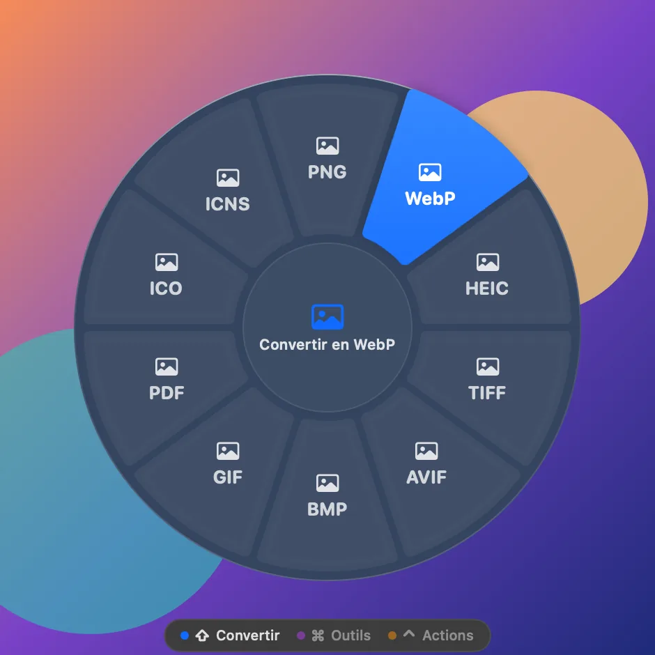
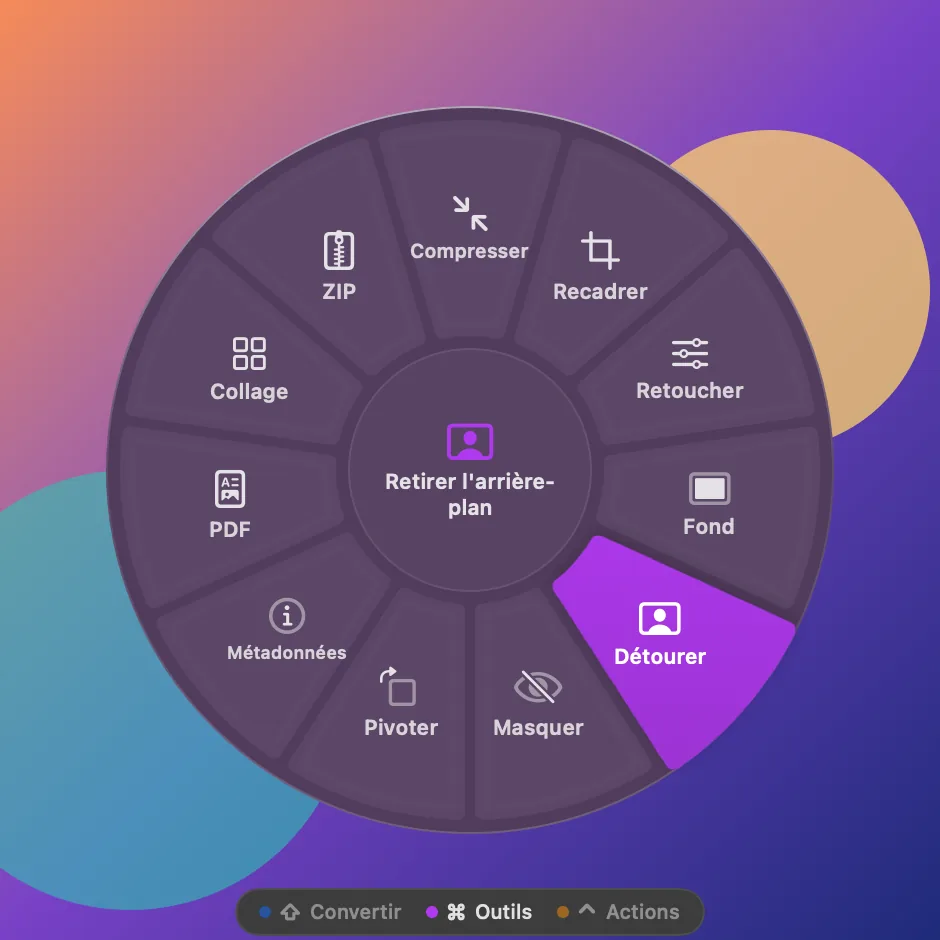
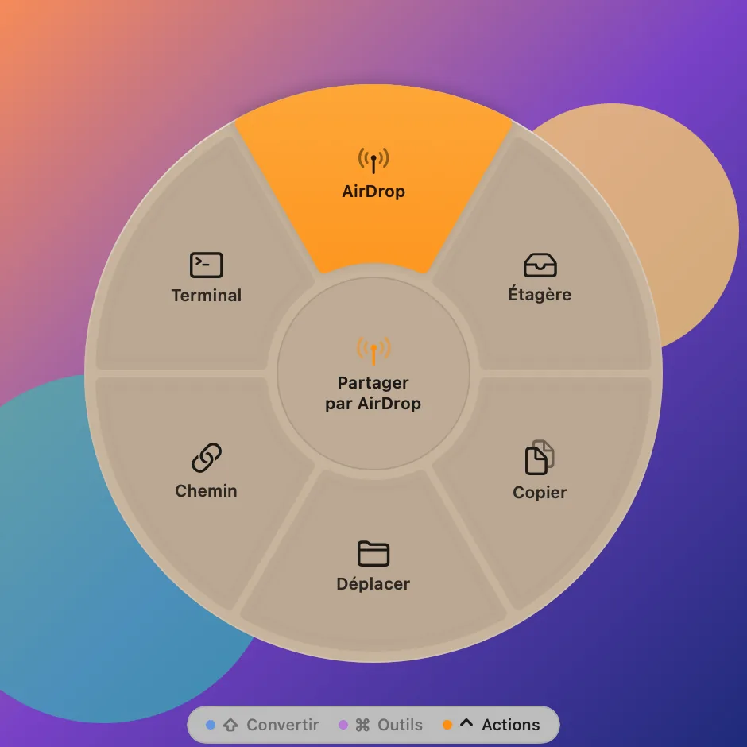
Formats
Ce qui entre. Ce qui en sort.
L’essentiel tourne avec les moteurs de macOS. Si ffmpeg, LibreOffice ou unar sont installés, Mue les détecte et la liste s’allonge d’elle-même.
Images
JPGPNGHEICTIFFBMPGIFPDFICOICNSWebPAVIF
Lecture aussi du SVG et des fichiers RAW.
Vidéo
MP4MOVGIFM4AWebMMKVAVIWMV
Audio
M4AWAVFLACAIFFMP3OGGOpusWMA
Documents
DOCXRTFODTTXTMarkdownHTMLEPUBPDFPPTXODP
Tableurs
CSVTSVXLSXJSONHTMLPDFXLSODS
Sous-titres et archives
SRTVTTZIPTARGZRAR7Z
Avec ffmpeg, LibreOffice ou unar, détectés automatiquement (Homebrew, MacPorts).
Sans le geste
L’Atelier, pour ceux qui préfèrent cliquer.
Le même catalogue en tuiles, avec les miniatures Quick Look des fichiers déposés. L’historique est conservé d’un lancement à l’autre, et une icône dans la barre des menus accepte aussi les fichiers.
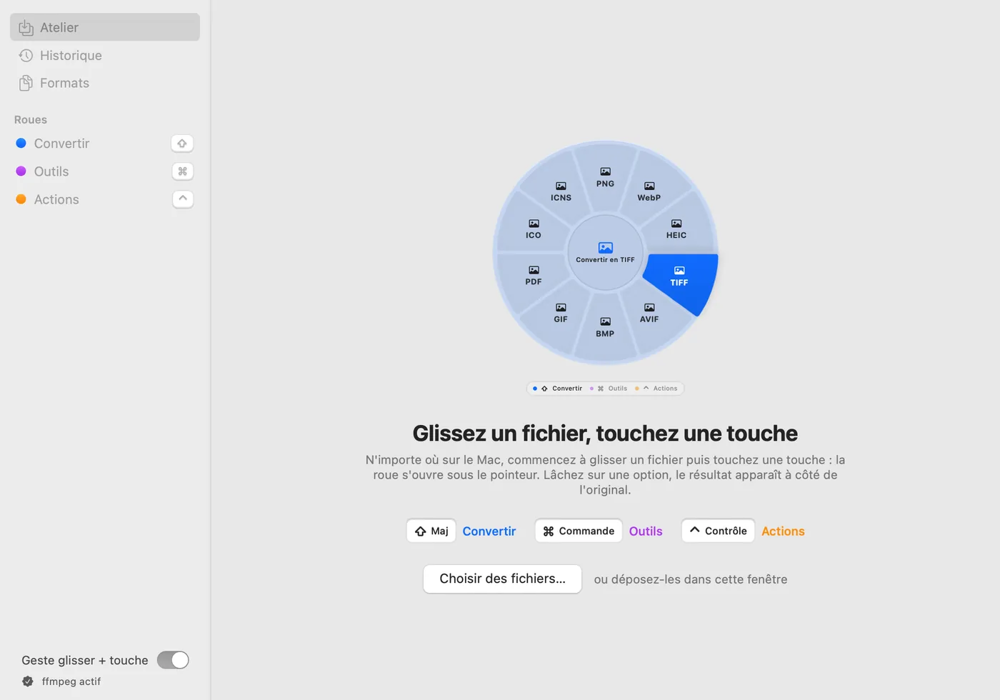
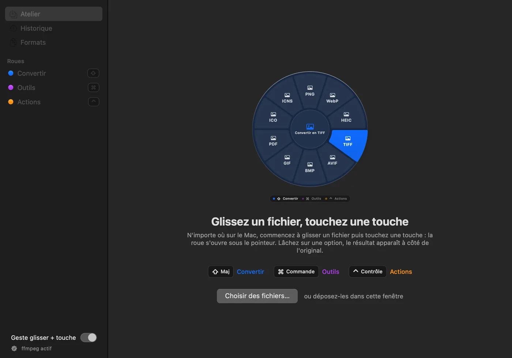
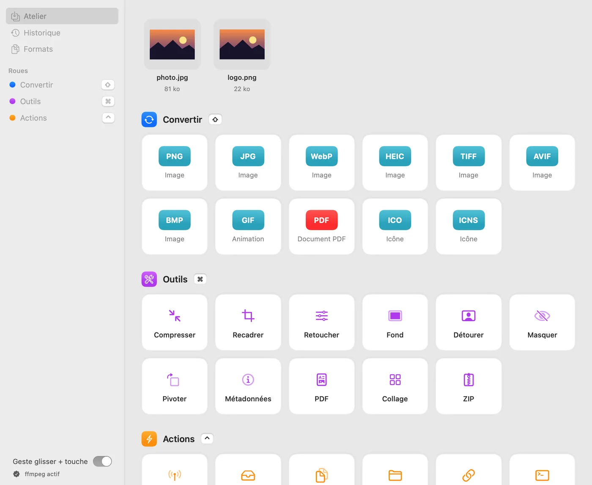
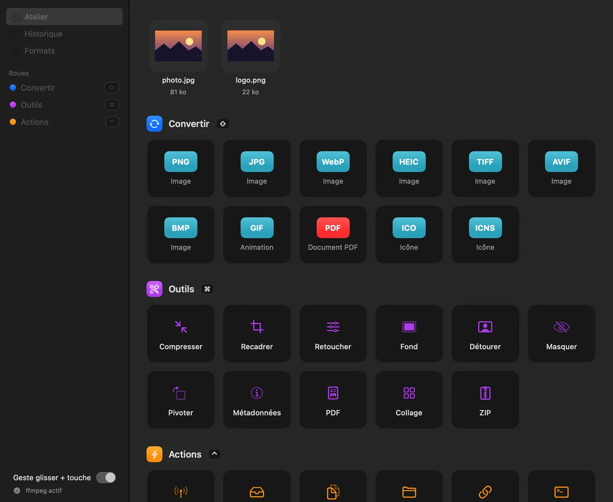
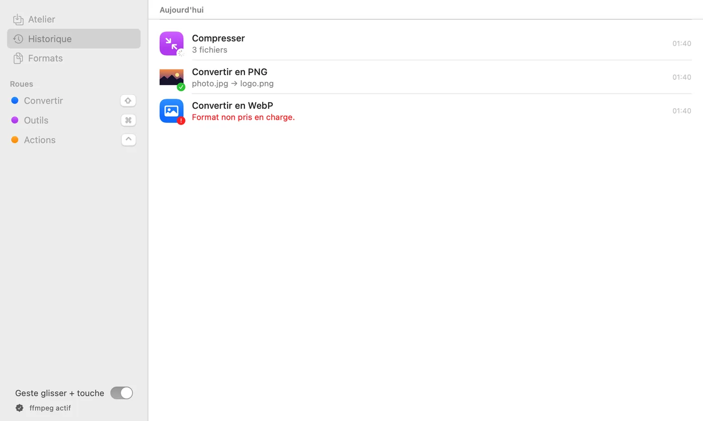
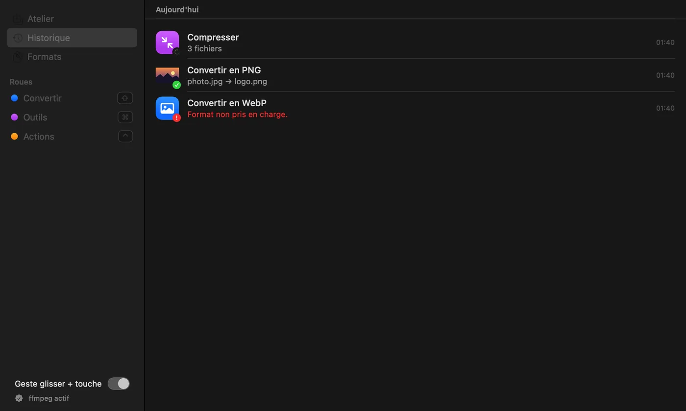
Réglages › Roue
La roue se règle comme on l’aime.
Une couleur de surbrillance par roue ou une seule pour les trois, trois styles, trois tailles, le fond automatique, sombre ou clair. L’aperçu change en direct, comme dans l’app.
Confidentialité
Rien ne quitte le Mac. Pas même une autorisation.
100 % local
Chaque conversion se fait sur le Mac. Aucun envoi, aucun compte, aucune file d’attente sur un serveur.
Aucune permission demandée
Le geste lit seulement l’état des boutons et des touches, et le presse-papiers de glisser. Pas d’accès à l’accessibilité, pas de surveillance du clavier.
Une copie, jamais l’original
Le résultat apparaît à côté du fichier de départ. Lâcher au centre de la roue annule, sans rien toucher.
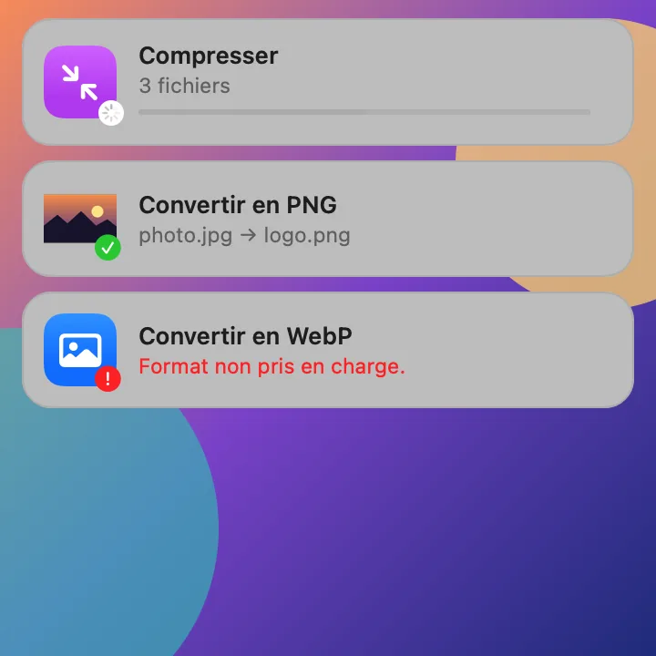
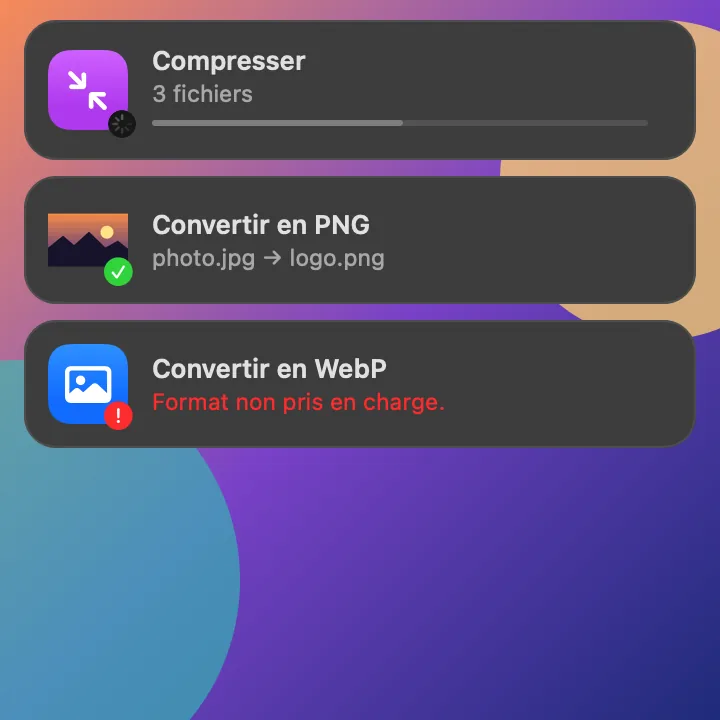
Questions
Avant le premier glisser.
Mue envoie-t-il mes fichiers en ligne ?
Non. Toutes les conversions se font sur le Mac, avec les moteurs de macOS et, s’ils sont installés, ffmpeg, LibreOffice ou unar. Rien n’est envoyé sur Internet.
Le geste demande-t-il une autorisation d’accessibilité ?
Non. Mue lit seulement l’état des boutons et des touches, et le contenu du presse-papiers de glisser. Il n’a pas besoin de surveiller le clavier ni de contrôler l’ordinateur.
Où arrive le fichier converti ?
À côté de l’original, par défaut. Le dossier de sortie, la qualité et les touches se règlent dans Mue › Réglages. Lâcher le fichier au centre de la roue annule.
Peut-on s’en servir sans le geste ?
Oui. La fenêtre Atelier propose le même catalogue : on y dépose des fichiers et on clique sur une option. On peut aussi déposer un fichier sur l’icône de la barre des menus, ou passer par le clic droit du Finder.
Sur quels Mac fonctionne Mue ?
Sur les Mac Apple silicon avec macOS 27 ou plus récent. Mue est une réalisation de MTX Studio : écrivez à mtxstudio@proton.me pour en savoir plus.